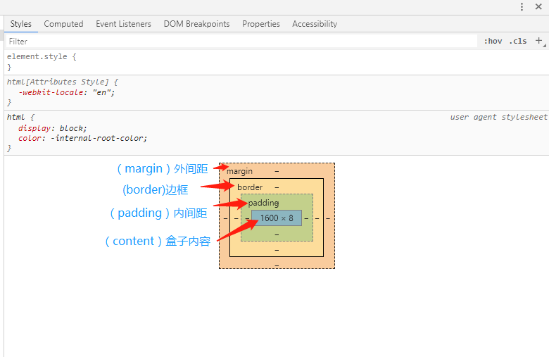
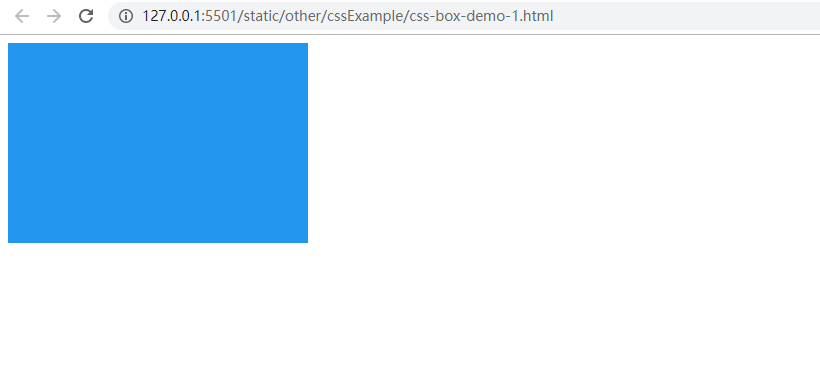
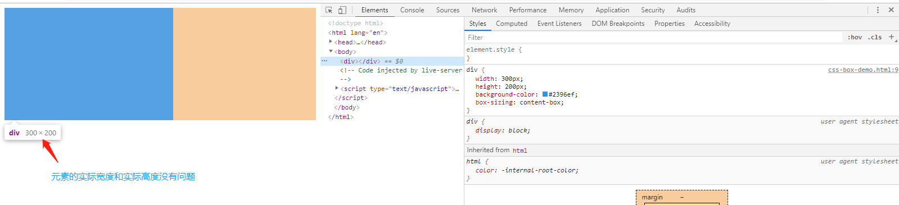
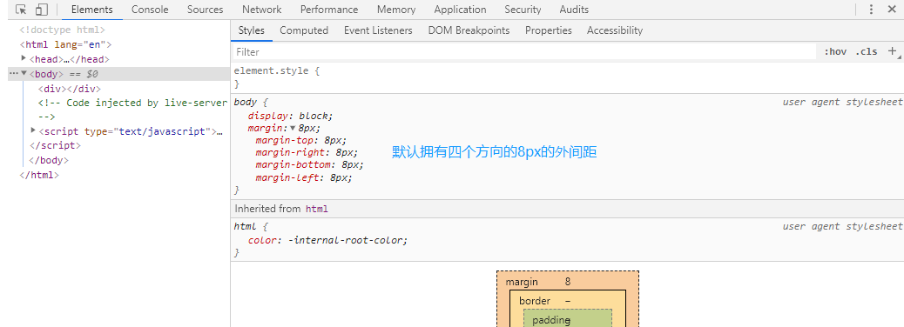
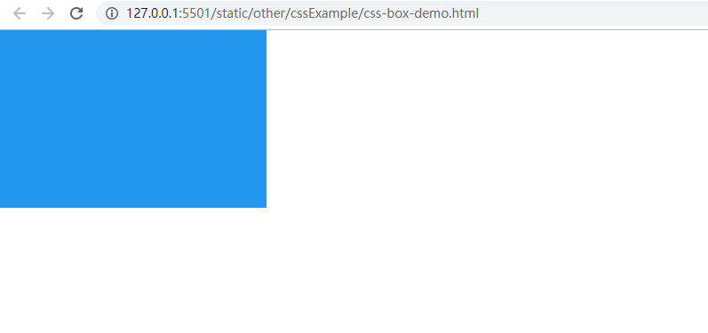
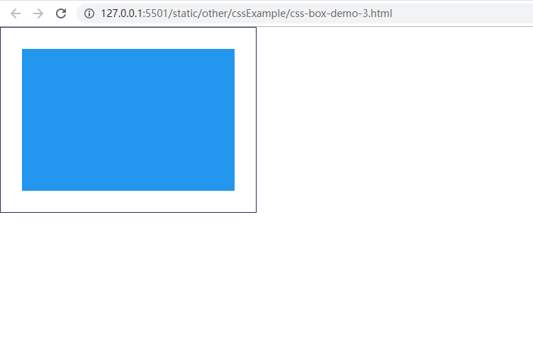
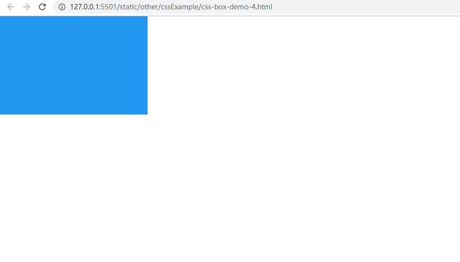
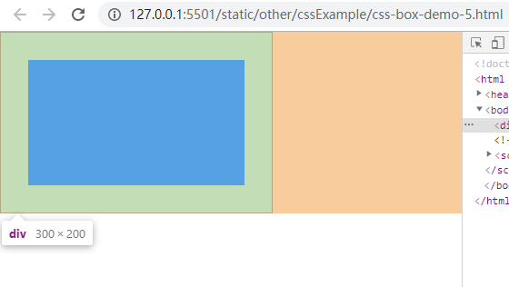

所谓css盒子,其实就是把一个网页进行拟物化的比喻,一个网页就相当于是一个盒子,有盒子壁,盒子内容(也就是我们通常写的标签元素),盒子向外与其它物体的距离(相当于把盒子扩大,然后扩大的盒子与原本盒子的距离),与盒子向内与内容的距离(相当于把盒子缩小,然后缩小的盒子与原本盒子的距离).经常操作浏览器控制台的人应该不难发现,其实我们所谓的css盒子就在你眼前,也许你还不一定注意到.如下图:
上图就是一个盒子模型,每个浏览器自带的都有一个css盒子模型,方便我们写代码调试样式.而盒子壁,盒子内容,盒子向外扩大的距离与盒子向内缩小的距离,我们都有相关的术语来表示,如上图所展示的,盒子向外扩大的距离就叫margin(通常称作外间距),盒子向内收缩的距离就叫padding(也叫内间距),盒子壁叫border(也叫边框),盒子内容就叫content.为了正确设置标签元素的宽高,就必须要了解盒子模型的原理.
在css术语当中有一个属性可以表示盒子模型的种类,即“box-sizing”。它有三个属性值,如下:
但是因为一些客观的原因,标准盒子模型在实际开发中并不常用,而相反IE的标准盒子模型却成为了比较流行的盒子模型.所以在很多网站开发中,首先都会要重置css样式,通过box-sizing属性将盒子模型转换为IE的标准盒子模型。
为了说明这个问题,我们可以通过示例来展示,以下为标准盒子模型(w3c盒子模型)示例:
HTML代码如下:
<div></div>
css代码如下:
div {
width: 300px;
height: 200px;
background-color: #2396ef;
/*盒子模型设置为w3c标准盒子模型*/
box-sizing: content-box;
}
运行结果 如下:
打开控制台，我们可以看到元素的实际宽度和实际高度:
当然在继续之前，还得说明一个问题，那就是浏览器默认有8px的margin(外间距),如下图所示:
这也是为什么我们要做CSS初始化的原因。如下所示:
/*使用通用选择器匹配所有的元素*/
* {
margin:0;
padding:0;
}
当我们加上了初始化样式代码之后，就能发现，元素相对于浏览器边缘就没有了间距，也就是与浏览器边缘紧密贴着。如下图所示:
请自行对比看看:
接下来,我们为这个元素添加边框与内间距。代码如下:
div {
width: 300px;
height: 200px;
background-color: #2396ef;
/*盒子模型设置为w3c标准盒子模型*/
box-sizing: content-box;
padding:30px;
border:1px solid #223354;
/*方便查看效果我们让背景色只铺满盒子的内容区域*/
background-clip: content-box;
}
运行结果 如下图所示:
我们可以看到元素很明显被扩大了,通过浏览器盒子模型,这我们可以打开浏览器控制台查看浏览器盒子模型。如下图所示:
通过上图我们可以轻易的看出:
元素的实际宽度和高度之所以被扩大了,是因为1px的边框与30px的内间距造成的。
根据前面所述,所以得出一个结论,那就是标准的盒子模型所设置元素的宽度和高度是不包含内间距与边框的,如果额外的设置边框与内间距会给元素额外的增加宽度与高度,也就是说所设置的元素的宽度和高度都被增加了,增加的距离等于内间距加上边框的宽度,注意内间距和边框也包括外间距都是四个方向的,所以计算时左右和上下两个方向都要加2次,即双倍。计算公式如下:
元素被增加的宽度 = 内间距 x 2 + 边框的宽度 x 2。
元素被增加的高度 = 内间距 x 2 + 边框的宽度 x 2。
实际元素的宽度 = 元素被增加的宽度 + 元素所设置的宽度。
实际元素的高度 = 元素被增加的高度 + 元素所设置的高度。
接下来,我们来看一个IE的标准盒子模型的示例:
HTML代码如下:
<div></div>
css代码如下:
* {
margin: 0;
padding: 0;
}
div {
width: 300px;
height: 200px;
background-color: #2396ef;
box-sizing: border-box;
}
运行结果 如下图所示:
从上图我们可以看到,其实这与没有设置内间距和边框的标准盒子模型的示例并没有啥区别。所以接下来就是重点了,我们为这个div元素增加内间距与边框。
div {
width: 300px;
height: 200px;
background-color: #2396ef;
box-sizing: border-box;
border: 1px solid #223354;
padding: 30px;
/*方便查看效果我们让背景色只铺满盒子的内容区域*/
background-clip: content-box;
}
运行结果 如下图所示:
我们来看以下浏览器盒子模型显示的效果:
通过浏览器盒子模型我们可以看出,实际元素的宽度的高度并没有增加,而是内容向内四个方向各自收缩了30px,所以得出结论。
实际元素的宽度 = 内容的宽度 + 内间距 x 2 + 边框的宽度 x 2。
实际元素的高度 = 内容的高度 + 内间距 x 2 + 边框的高度 x 2。
所以在计算内容的宽度和高度时,我们就必须要注意。
我们来看两种盒子模型加了内容之后的情况，如下:
如果想查看上面两个示例，可以点击示例一与示例二。然后自行打开浏览器控制台查看源码，或者按ctrl+U查看源码。
通过上述示例,我们主要区分标准盒子模型与IE标准盒子模型的区别,就是标准盒子模型的宽度和高度不会受内间距与边框的影响,而IE标准盒子模型宽度与高度却要受内间距与边框的影响,这是两者最大的区别,在开发之中务必要区分清楚。